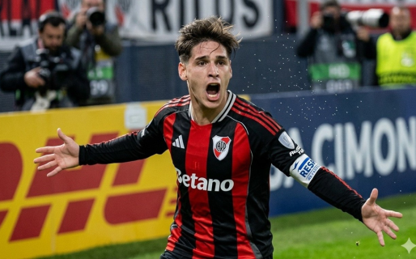

Boca Jrs.
Boca Jrs. Riestra
Riestra
River ganó y se afirma en la cima
El conjunto millonario consiguió una nueva victoria y continúa liderando la tabla de posiciones. Con un rendimiento sólido y una defensa cada vez más firme, River se consolida como uno de los principales candidatos al título en la Liga Profesional Argentina.